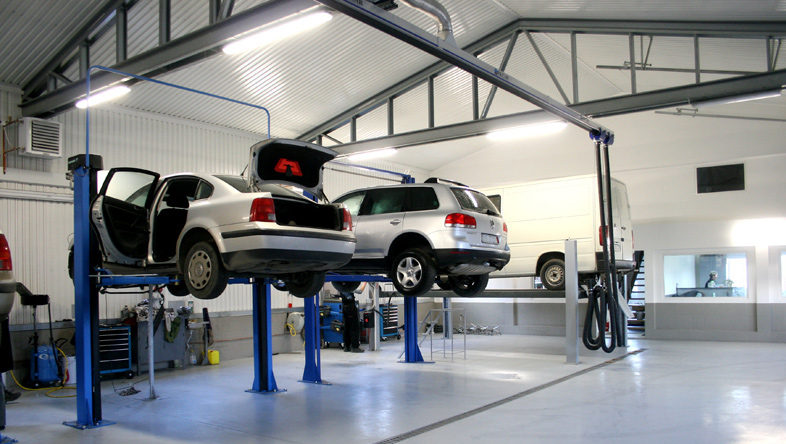
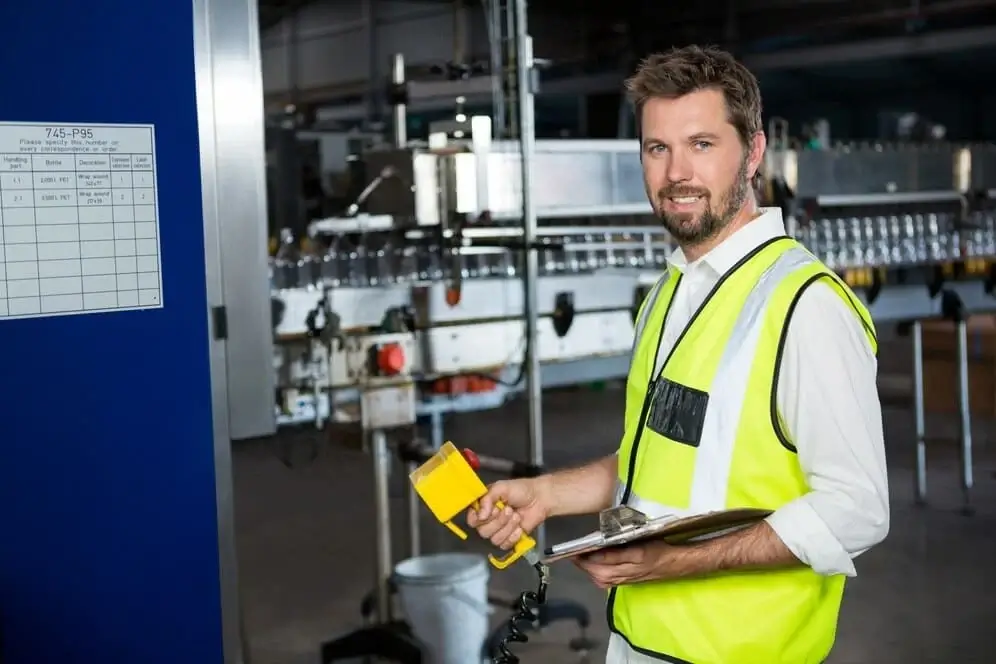
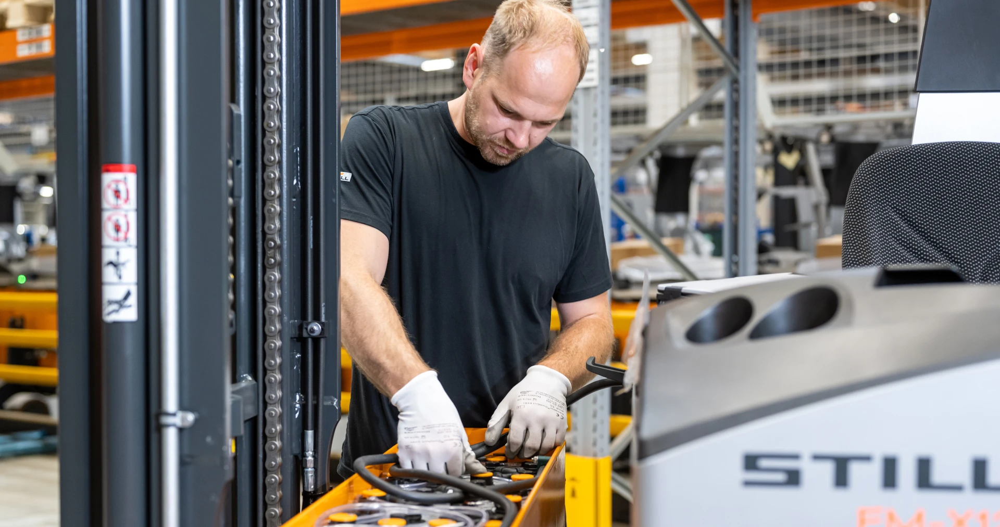
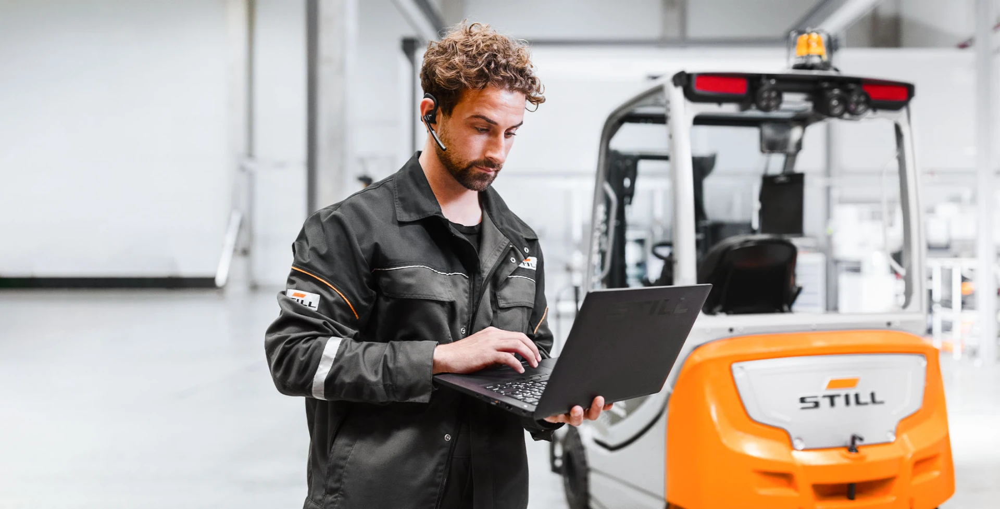
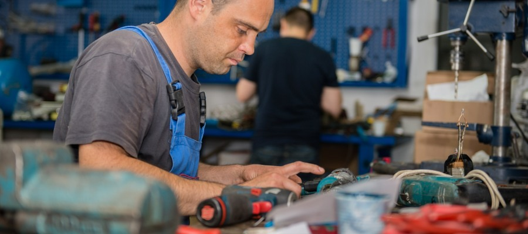

Pasionați de automobile, dedicați calității

AutoLine a fost fondată în 2012 cu o misiune simplă: să oferim servicii auto de calitate superioară la prețuri corecte și transparente. Am crescut de la un mic service de cartier la unul dintre cele mai apreciate centre auto din Chișinău.
Investim constant în echipamente de ultimă generație și în formarea continuă a echipei noastre. Fiecare tehnician al AutoLine are minimum 5 ani experiență și certificări profesionale în domeniu.
Piese originale și materiale premium
Prețuri clare, fără surprize
Lucrări livrate la timp, mereu
6 luni garanție la toate lucrările
Profesioniști cu experiență, pasionați de automobile

15 ani experiență, certificat Bosch Car Service

Expert în sisteme electronice auto, 10 ani exp.

Certificat ATE, 8 ani experiență

Coordonează programările și satisfacția clienților
Programează-te astăzi și descoperă diferența AutoLine.
Programează-te Acum